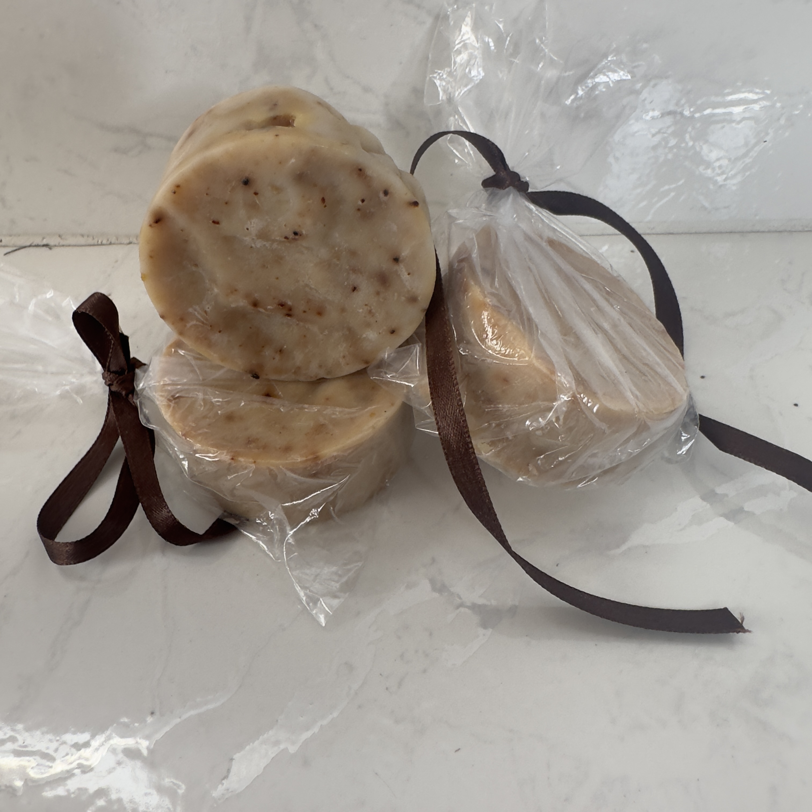
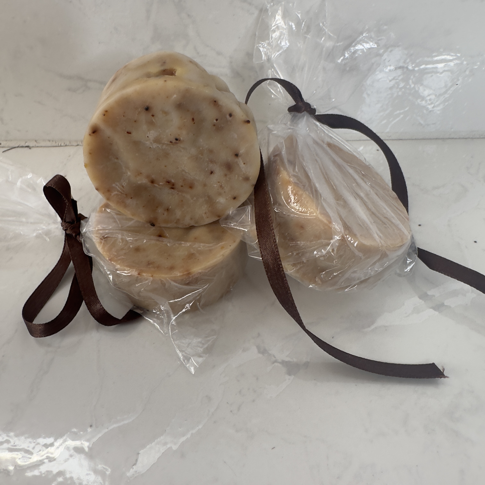
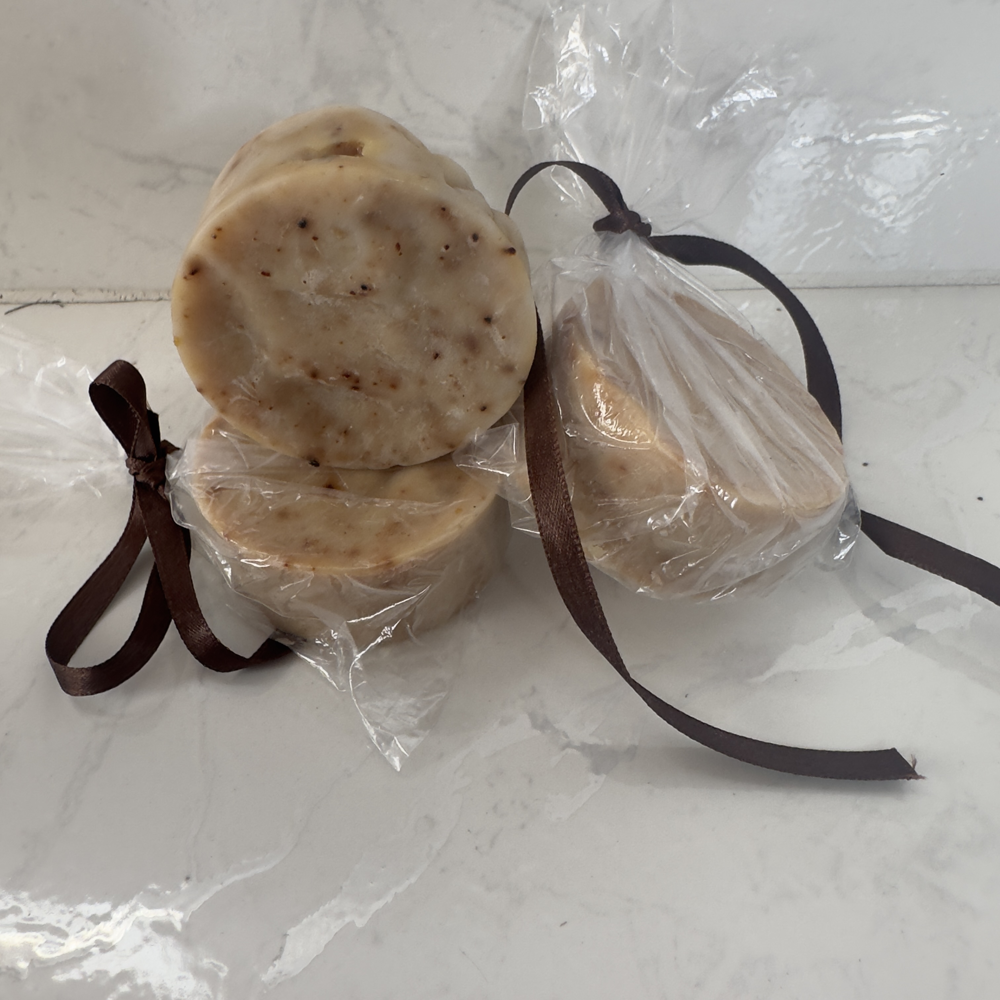
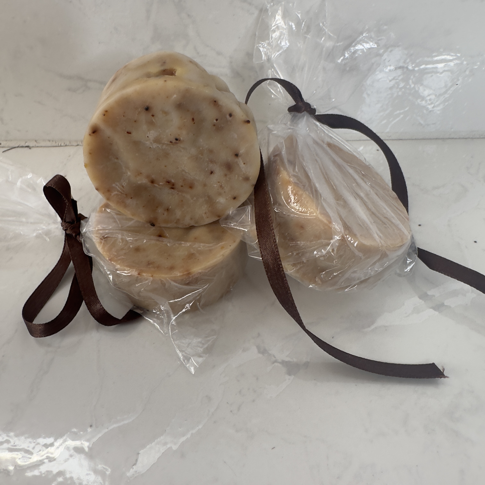

 

La huerta escolar promueve la soberanía alimentaria, el trabajo en equipo y el cuidado del suelo mediante prácticas sostenibles de siembra y cosecha.
Aprendemos a sembrar con amor y respeto por la tierra.
Transformamos los residuos orgánicos en abono natural, cerrando el ciclo de los nutrientes y reduciendo los desechos del colegio.
Aprendemos a sembrar con amor y respeto por la tierra.
Fomentamos el conocimiento agrícola y la valoración de nuestro patrimonio caficultor a través del cultivo responsable del café.
Aprendemos a sembrar con amor y respeto por la tierra.
Promovemos la clasificación de residuos y la reutilización creativa de materiales para cuidar el entorno.
Aprendemos a sembrar con amor y respeto por la tierra.
Elaboramos jabones artesanales con productos naturales, fomentando la economía circular y la creatividad estudiantil.
Aprendemos a sembrar con amor y respeto por la tierra.
Pronto aprenderemos sobre el mundo de las abejas y su papel fundamental en la polinización y el equilibrio ecológico.
Aprendemos a sembrar con amor y respeto por la tierra.